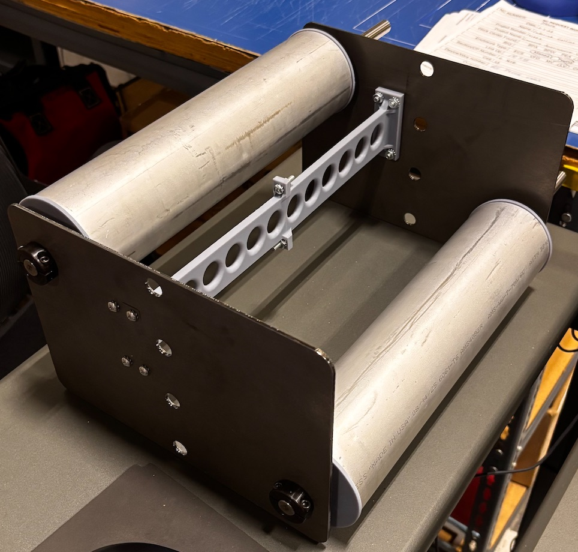
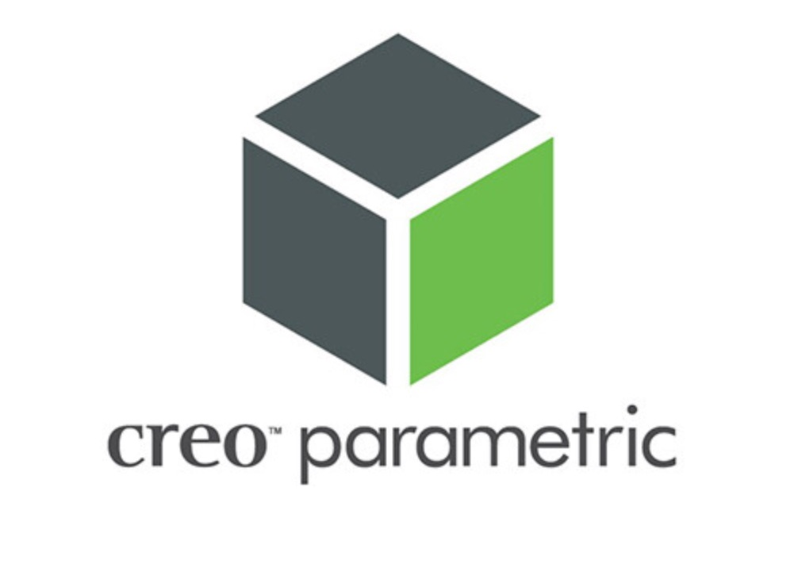
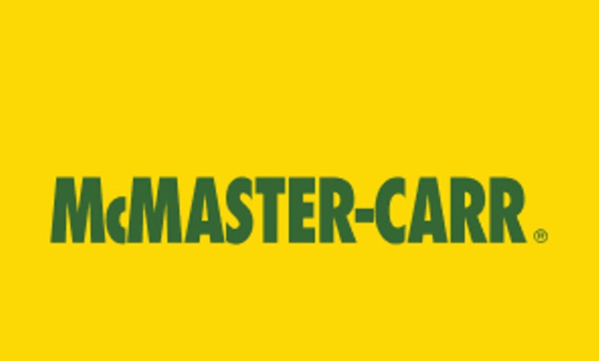
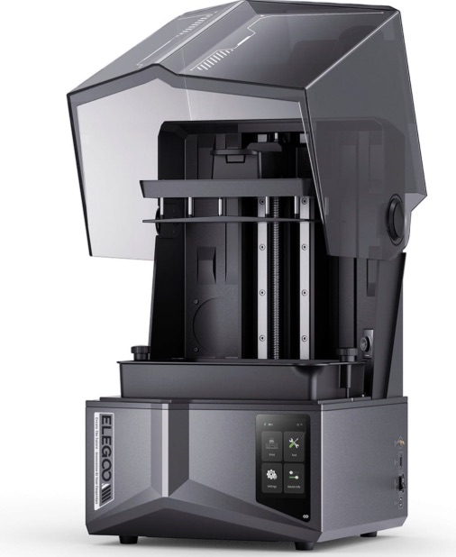
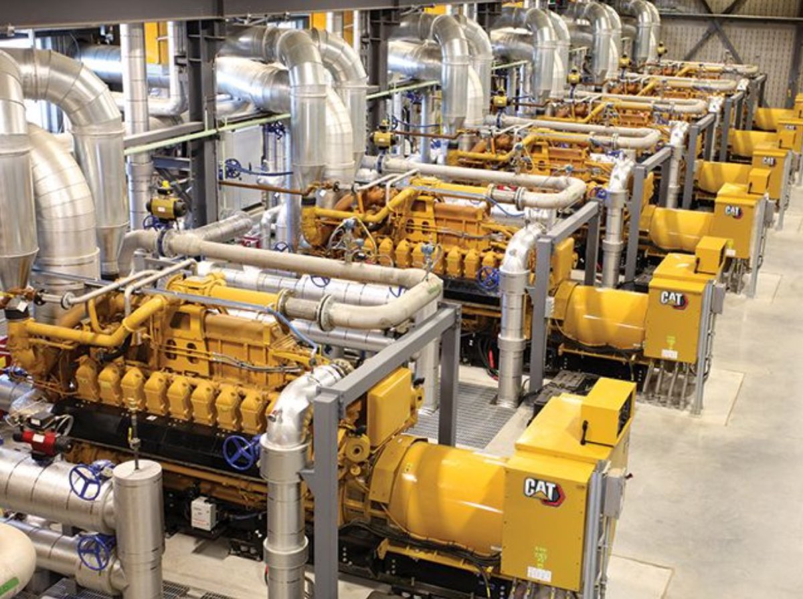

2026 · Industry
Caterpillar wire feed improvement
A three-part redesign of a production wire feed system to cut operator intervention and part wear.
Overview
I owned a project at Caterpillar to make a production wire feed system more efficient, taking it from research through testing, CAD, prototyping, and implementation on the production floor. The final result is a three-part solution.
System specifics are left out for confidentiality.
Problem
The existing wire feed system required a lot of operator intervention and was not effectively automated. Its parts also saw heavy wear and tear.
Approach
Research
I started with the physics behind the feed: dynamic friction along the wire path and the bend radii the wire can tolerate.
Testing concepts
From there I tested different parts and systems, including custom 3D prints, tubes, and pulleys, and narrowed them down to a three-part solution.
Parts 1 and 2
I implemented the first two parts using calculations for the various wire gauges the system runs.
Part 3
For the third part, I modeled a custom solution in Creo Parametric, optimized for outsourced manufacturing: custom design built around standardized parts. I took it through CAD, refinement, prototyping, build, implementation, and testing.
Results
The three-part solution made the wire feed process more efficient on all three measures above.
Tools and context




Key takeaways
- CAD in industrial applications
- Actual production and assembly of parts I designed
- Working on the production floor
- Working with the supply chain team
- Being accountable for my own project from start to finish